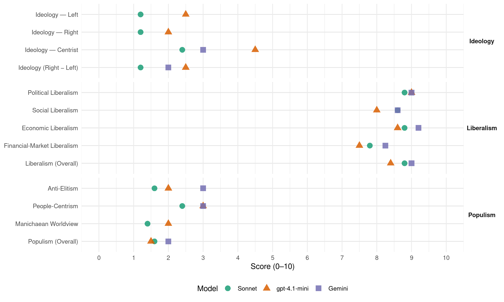

FDP (Germany, 1994)
manifesto_id 41420_199410
Get full text: This site shows derived annotations and short verbatim quotes only. The full manifesto text is © Manifesto Project / WZB — obtain it via manifesto-project.wzb.eu using the manifesto_id above.
Headline scores
| Dimension | Sonnet | gpt-4.1-mini | Gemini |
|---|---|---|---|
| Populism (Overall) | 1.6 | 1.5 | 2.0 |
| Anti-Elitism | 1.6 | 2.0 | 3.0 |
| People-Centrism | 2.4 | 3.0 | 3.0 |
| Manichaean Worldview | 1.4 | 2.0 | – |
| Ideology (Right − Left) | 1.2 | 2.5 | 2.0 |
| Liberalism (Overall) | 8.8 | 8.4 | 9.0 |
| Political Liberalism | 8.8 | 9.0 | 9.0 |
| Social Liberalism | 8.6 | 8.0 | 8.6 |
| Economic Liberalism | 8.8 | 8.6 | 9.2 |
| Financial-Market Liberalism | 7.8 | 7.5 | 8.2 |
Evidence per dimension
Economic Liberalism
Gemini · score 10.0 · verified · chunk 1
“konsequent auf Marktwirtschaft und Wettbewerb”
setzt als einzige Partei in Deutschland konsequent auf Marktwirtschaft und Wettbewerb. Wir brauchen im
Gemini · score 10.0 · verified · chunk 2
“Grundsatz einer offenen Marktwirtschaft”
Der in den Maastrichter Verträgen niedergelegte Grundsatz einer offenen Marktwirtschaft darf auch nicht
Gemini · score 9.0 · verified · chunk 3
“Wirtschaft von unnötigen Überregulierungen und Einschränkungen”
unterzogen werden. Es gilt die Wirtschaft von unnötigen Überregulierungen und Einschränkungen zu entlasten, die die unternehmerische
Gemini · score 8.0 · verified · chunk 4
“privatwirtschaftliches Engagement auch auf dem Gebiet”
Möglichkeiten in den Vereinen. Die F.D.P. begrüßt privatwirtschaftliches Engagement auch auf dem Gebiet des Sports. In Bauplanung, Baunutzung
Gemini · score 9.0 · verified · chunk 5
“konsequente Öffnung der Märkte in Europa”
Wichtiger als milliardenschwere Hilfsprogramme ist dabei die konsequente Öffnung der Märkte in Europa und weltweit. Dort wo Umweltverschmutzung schwere Gesundheitsschäden
gpt-4.1-mini · score 9.0 · verified · chunk 1
“Die F.D.P. setzt als einzige Partei in Deutschland konsequent auf Marktwirtschaft und Wettbewerb”
Die F.D.P. setzt als einzige Partei in Deutschland konsequent auf Marktwirtschaft und Wettbewerb. Wir brauchen im internationalen Standortwettbewerb flexiblere Arbeitszeiten, mehr Teilzeitarbeit und mehr betriebsnahe Vereinbarungen. Wir müssen bürokratische Überregulierungen abbauen und die Genehmigungsverfahren beschleunigen.
gpt-4.1-mini · score 9.0 · verified · chunk 2
“Marktwirtschaft braucht Umweltschutz, Umweltschutz braucht Marktwirtschaft”
Marktwirtschaft braucht Umweltschutz, Umweltschutz braucht Marktwirtschaft Für die dauerhafte Sicherung der natürlichen Lebensgrundlagen ist die Marktwirtschaft unverzichtbare Grundlage: Unter den Rahmenbedingungen einer liberalen Wirtschaftsordnung mit Wettbewerb auf offenen Märkten, funktionsfähiger Eigentumsordnung und dem Verursacherprinzip zwingt die Marktwirtschaft zum sparsamen Umgang mit knappen Ressourcen.
gpt-4.1-mini · score 8.0 · verified · chunk 3
“Liberales Handels- und Wirtschaftsrecht hat daher die Aufgabe, auf der Basis der sozialen Marktwirtschaft günstige gesetzliche Rahmenbedingungen zu schaffen”
Ziel liberaler Rechtspolitik ist es auch, im Interesse der Erhaltung und Mehrung des Wohlstands unserer Gesellschaft die Leistungskraft der deutschen Wirtschaft zu stärken und ihre Wettbewerbsfähigkeit auf den Weltmärkten weiter zu verbessern. Liberales Handels- und Wirtschaftsrecht hat daher die Aufgabe, auf der Basis der sozialen Marktwirtschaft günstige gesetzliche Rahmenbedingungen zu schaffen, die die unternehmerische Eigeninitiative und Leistungsbereitschaft fördern und Anreize für Investitionen und Innovationen bieten.
gpt-4.1-mini · score 8.0 · verified · chunk 4
“Demokratie, soziale Marktwirtschaft, freier Welthandel und Abbau des Protektionismus entscheidend zu einer weltweit tragfähigen Entwicklung beitragen”
…Liberale sind überzeugt davon, daß Demokratie, soziale Marktwirtschaft, freier Welthandel und Abbau des Protektionismus entscheidend zu einer weltweit tragfähigen Entwicklung beitragen. Präventives, Konfliktmanagement und erweiterte Sicherheit Die Welt ist freier, aber nicht friedlicher geworden….
gpt-4.1-mini · score 9.0 · verified · chunk 5
“Freier Welthandel und der Abbau des internationalen Protektionismus sind Bedingungen für eine globale Entwicklungspartnerschaft”
Freier Welthandel und der Abbau des internationalen Protektionismus sind Bedingungen für eine globale Entwicklungspartnerschaft. Der Erfolg der Uruguay-Runde der GATT-Verhandlungen bedeutet stärkere Wachstumsimpulse und größere Entwicklungschancen für unsere Partnerländer.
Sonnet · score 9.0 · verified · chunk 1
“konsequent auf Marktwirtschaft und Wettbewerb”
Die F.D.P. setzt als einzige Partei in Deutschland konsequent auf Marktwirtschaft und Wettbewerb
Sonnet · score 9.0 · verified · chunk 2
“Privatisierung, Deregulierung und verstärkten Einsatz marktwirtschaftlicher”
Die Liberalen fordern größere Beweglichkeit für den Wirtschaftsstandort Deutschland auch durch Privatisierung, Deregulierung und verstärkten Einsatz marktwirtschaftlicher Instrumente statt starrer ordnungsrechtlicher Regulierungen.
Sonnet · score 9.0 · verified · chunk 3
“unternehmerische Eigeninitiative und Leistungsbereitschaft fördern”
günstige gesetzliche Rahmenbedingungen zu schaffen, die die unternehmerische Eigeninitiative und Leistungsbereitschaft fördern und Anreize für Investitionen und Innovationen bieten.
Sonnet · score 8.0 · verified · chunk 4
“Wettbewerb in einer differenzierten Hochschullandschaft”
Die F.D.P. will mehr Wettbewerb in einer differenzierten Hochschullandschaft. Deshalb fordert die F.D.P.:
Sonnet · score 9.0 · verified · chunk 5
“Protektionismus kein Mittel der Wirtschaftspolitik”
Für Liberale ist Protektionismus kein Mittel der Wirtschaftspolitik. Eine Festung Europa darf es nicht geben.
Financial-Market Liberalism
Gemini · score 9.0 · verified · chunk 1
“Wagnis- und Risikokapital-Finanzierung durch die deutschen Banken”
Bessere Wagnis- und Risikokapital-Finanzierung durch die deutschen Banken und Venture-Capital-Gesellschaften sowie
Gemini · score 8.0 · verified · chunk 2
“Vollmachtsstimmrechts der Banken”
Hauptversammlungspräsenzen und zur Steigerung der Praktikabilität des Vollmachtsstimmrechts der Banken Muß geprüft
Gemini · score 8.0 · verified · chunk 3
“Vollmachtsstimmrechts der Banken Muß geprüft werden”
Hauptversammlungspräsenzen und zur Steigerung der Praktikabilität des Vollmachtsstimmrechts der Banken Muß geprüft werden, wie die Erteilung
Gemini · score 8.0 · verified · chunk 5
“Unabhängigkeit einer eindeutig auf die Wahrung der Geldwertstabilität verpflichteten Europäischen Zentralbank”
Wechselkurse und Harmonisierung der langfristigen Zinssätze) und die Unabhängigkeit einer eindeutig auf die Wahrung der Geldwertstabilität verpflichteten Europäischen Zentralbank. Die Bundesregierung
gpt-4.1-mini · score 8.0 · verified · chunk 1
“Die Privatisierung der Deutschen Bundespost Telekom, Postbank und Postdienst muß mit Nachdruck vorangetrieben werden”
Die Privatisierung der Deutschen Bundespost Telekom, Postbank und Postdienst muß mit Nachdruck vorangetrieben werden. Die Privatisierungen sind so zu gestalten, daß staatliche Monopole nicht einfach in private umgewandelt werden und Mischkonzerne sowie marktbeherrschende Unternehmen vor der Privatisierung entflochten werden.
gpt-4.1-mini · score 7.0 · verified · chunk 2
“Die ökologische Weiterentwicklung des Steuersystems ist für Umweltvorsorge und internationale Wettbewerbsfähigkeit besonders wichtig”
Die ökologische Weiterentwicklung des Steuersystems ist für Umweltvorsorge und internationale Wettbewerbsfähigkeit besonders wichtig. Es geht darum, die zu hohe Belastung der Arbeitsplätze und der Kapitalbildung abzubauen und dafür umweltschädigendes Verhalten steuerlich stärker zu belasten.
Sonnet · score 8.0 · verified · chunk 1
“Wagnis- und Risikokapital-Finanzierung durch die deutschen Banken”
Bessere Wagnis- und Risikokapital-Finanzierung durch die deutschen Banken und Venture-Capital-Gesellschaften sowie bessere Übergänge von Mitarbeitern
Sonnet · score 8.0 · verified · chunk 2
“Kapitalbildung abzubauen”
Es geht darum, die zu hohe Belastung der Arbeitsplätze und der Kapitalbildung abzubauen und dafür umweltschädigendes Verhalten steuerlich stärker zu belasten.
Sonnet · score 8.0 · verified · chunk 3
“Vollmachtsstimmrechts der Banken”
Zur Erhöhung der Hauptversammlungspräsenzen und zur Steigerung der Praktikabilität des Vollmachtsstimmrechts der Banken Muß geprüft werden, wie die Erteilung der Vollmachten vereinfacht werden kann.
Sonnet · score 7.0 · verified · chunk 4
“Marktwirtschaft, freier Welthandel und Abbau des Protektionismus”
Liberale sind überzeugt davon, daß Demokratie, soziale Marktwirtschaft, freier Welthandel und Abbau des Protektionismus entscheidend zu einer weltweit tragfähigen Entwicklung beitragen.
Sonnet · score 8.0 · verified · chunk 5
“Unabhängigkeit einer eindeutig auf die Wahrung der Geldwertstabilität”
Voraussetzungen für die WWU sind die strikte Einhaltung der vereinbarten Konvergenzkriterien und die Unabhängigkeit einer eindeutig auf die Wahrung der Geldwertstabilität verpflichteten Europäischen Zentralbank.
Political Liberalism
Gemini · score 9.0 · verified · chunk 1
“Voraussetzungen für eine freiheitliche und demokratische Gesellschaft”
geprägt und damit die Voraussetzungen für eine freiheitliche und demokratische Gesellschaft geschaffen. Sie haben
Gemini · score 9.0 · verified · chunk 2
“Freiheitsrechte sind konstitutive Fundamente”
Denn die Freiheitsrechte sind konstitutive Fundamente unseres Rechtsstaates und Bedingung dafür
Gemini · score 9.0 · verified · chunk 3
“den Bürger als frei verantwortliches Individuum”
Die Bundesrepublik Deutschland schützt im Gegensatz zur ehemaligen DDR den Bürger als frei verantwortliches Individuum. Die Rehabilitierung
Gemini · score 9.0 · verified · chunk 4
“funktionierende freiheitliche Demokratie”
sowie ihren Rang für eine funktionierende freiheitliche Demokratie. Die weitere Entwicklung des Sports
Gemini · score 9.0 · verified · chunk 5
“eine europäische Verfassung mit einem Grundrechtekatalog”
Deshalb fordert die F.D.P.: - Wir wollen eine europäische Verfassung mit einem Grundrechtekatalog. Diese Verfassung sollte vom Europäischen Parlament erarbeitet
gpt-4.1-mini · score 9.0 · verified · chunk 1
“Die Liberalen haben maßgeblich das Grundgesetz geprägt und damit die Voraussetzungen für eine freiheitliche und demokratische Gesellschaft geschaffen”
Seit der Gründung der Bundesrepublik Deutschland steht die F.D.P. in der Verantwortung für unser Land - in der Bundesregierung, aber auch in der parlamentarischen Opposition. Die Liberalen haben maßgeblich das Grundgesetz geprägt und damit die Voraussetzungen für eine freiheitliche und demokratische Gesellschaft geschaffen.
gpt-4.1-mini · score 9.0 · verified · chunk 2
“Freiheit ist unteilbar”
Freiheit ist unteilbar Der Erhalt, die Sicherung und der Ausbau der bürgerlichen Grund- und Freiheitsrechte sind die vorrangigen Aufgaben liberaler Rechtspolitik.
gpt-4.1-mini · score 9.0 · verified · chunk 3
“Glaubens-, Gewissens- und Bekenntnisfreiheit sowie das Recht auf freie Religionsausübung”
Ziel liberaler Politik ist die Sicherung und Erweiterung der Freiheit. Hierzu gehören entscheidend die gerade auch vom Liberalismus erstrittene Glaubens-, Gewissens- und Bekenntnisfreiheit sowie das Recht auf freie Religionsausübung, wie sie im Artikel 4 des Grundgesetzes stärker als je zuvor in der deutschen Geschichte als unmittelbar geltendes Recht garantiert sind.
gpt-4.1-mini · score 9.0 · verified · chunk 4
“Die Allgemeine Menschenrechtserklärung der Vereinten Nationen ist verpflichtend für alle Staaten”
…wo Menschenrechte bis hin zum Völkermord verletzt werden, wo staatliche Autorität nicht mehr besteht und deshalb Chaos und Anarchie herrschen, müssen die Vereinten Nationen gemäß dem Auftrag der UNO-Charta eingreifen können. Die Allgemeine Menschenrechtserklärung der Vereinten Nationen ist verpflichtend für alle Staaten. Die kulturelle, religiöse und gesellschaftliche Vielfalt der Welt steht dazu nicht im Widerspruch….
gpt-4.1-mini · score 9.0 · verified · chunk 5
“Die Europäische Union Muß endlich demokratischer werden”
Die Europäische Union Muß endlich demokratischer werden. Auf der 1996 vorgesehenen Regierungskonferenz, die unter Mitwirkung des Europäischen Parlaments stattfinden sollte, müssen substantielle Demokratisierungsfortschritte erreicht werden.
Sonnet · score 9.0 · verified · chunk 1
“freiheitliche und demokratische Gesellschaft geschaffen”
Die Liberalen haben maßgeblich das Grundgesetz geprägt und damit die Voraussetzungen für eine freiheitliche und demokratische Gesellschaft geschaffen
Sonnet · score 9.0 · verified · chunk 2
“Demokratie und Rechtsstaat möglich sind und bleiben”
Denn die Freiheitsrechte sind konstitutive Fundamente unseres Rechtsstaates und Bedingung dafür, daß Demokratie und Rechtsstaat möglich sind und bleiben.
Sonnet · score 8.0 · verified · chunk 3
“Glaubens-, Gewissens- und Bekenntnisfreiheit”
Hierzu gehören entscheidend die gerade auch vom Liberalismus erstrittene Glaubens-, Gewissens- und Bekenntnisfreiheit sowie das Recht auf freie Religionsausübung
Sonnet · score 9.0 · verified · chunk 4
“parlamentarischen Demokratie, zur Rechtsstaatlichkeit”
haben sich zum ersten Mal alle Mitgliedsstaaten zur parlamentarischen Demokratie, zur Rechtsstaatlichkeit, zum Schutz der Menschenrechte und zur Marktwirtschaft verpflichtet.
Sonnet · score 9.0 · verified · chunk 5
“volles Mitentscheidungsrecht des Europäischen Parlaments”
Dazu gehören: volles Mitentscheidungsrecht des Europäischen Parlaments, Initiativrecht für das Europäische Parlament
Liberalism (Overall)
Gemini · score 9.0 · verified · chunk 1
“konsequent auf Marktwirtschaft und Wettbewerb”
setzt als einzige Partei in Deutschland konsequent auf Marktwirtschaft und Wettbewerb. Wir brauchen im
Gemini · score 9.0 · verified · chunk 2
“Grundsatz einer offenen Marktwirtschaft”
Der in den Maastrichter Verträgen niedergelegte Grundsatz einer offenen Marktwirtschaft darf auch nicht
Gemini · score 9.0 · verified · chunk 3
“Ziel liberaler Politik ist die Sicherung und Erweiterung der Freiheit”
Kirchen und Religionsgemeinschaften Ziel liberaler Politik ist die Sicherung und Erweiterung der Freiheit. Hierzu gehören entscheidend
Gemini · score 9.0 · verified · chunk 4
“funktionierende freiheitliche Demokratie”
sowie ihren Rang für eine funktionierende freiheitliche Demokratie. Die weitere Entwicklung des Sports
Gemini · score 9.0 · verified · chunk 5
“dauerhaften Verankerung von Marktwirtschaft und Demokratie”
Sie gibt den jungen Reformstaaten im Osten zusätzliche Sicherheit auf ihrem Weg zur dauerhaften Verankerung von Marktwirtschaft und Demokratie. Diese Initiative
gpt-4.1-mini · score 9.0 · verified · chunk 1
“Die Liberalen haben maßgeblich das Grundgesetz geprägt und damit die Voraussetzungen für eine freiheitliche und demokratische Gesellschaft geschaffen”
Seit der Gründung der Bundesrepublik Deutschland steht die F.D.P. in der Verantwortung für unser Land - in der Bundesregierung, aber auch in der parlamentarischen Opposition. Die Liberalen haben maßgeblich das Grundgesetz geprägt und damit die Voraussetzungen für eine freiheitliche und demokratische Gesellschaft geschaffen.
gpt-4.1-mini · score 8.0 · verified · chunk 2
“Marktwirtschaft braucht Umweltschutz, Umweltschutz braucht Marktwirtschaft”
Marktwirtschaft braucht Umweltschutz, Umweltschutz braucht Marktwirtschaft Für die dauerhafte Sicherung der natürlichen Lebensgrundlagen ist die Marktwirtschaft unverzichtbare Grundlage: Unter den Rahmenbedingungen einer liberalen Wirtschaftsordnung mit Wettbewerb auf offenen Märkten, funktionsfähiger Eigentumsordnung und dem Verursacherprinzip zwingt die Marktwirtschaft zum sparsamen Umgang mit knappen Ressourcen.
gpt-4.1-mini · score 8.0 · verified · chunk 3
“Glaubens-, Gewissens- und Bekenntnisfreiheit sowie das Recht auf freie Religionsausübung”
Ziel liberaler Politik ist die Sicherung und Erweiterung der Freiheit. Hierzu gehören entscheidend die gerade auch vom Liberalismus erstrittene Glaubens-, Gewissens- und Bekenntnisfreiheit sowie das Recht auf freie Religionsausübung, wie sie im Artikel 4 des Grundgesetzes stärker als je zuvor in der deutschen Geschichte als unmittelbar geltendes Recht garantiert sind.
gpt-4.1-mini · score 8.0 · verified · chunk 4
“Die Allgemeine Menschenrechtserklärung der Vereinten Nationen ist verpflichtend für alle Staaten”
…wo Menschenrechte bis hin zum Völkermord verletzt werden, wo staatliche Autorität nicht mehr besteht und deshalb Chaos und Anarchie herrschen, müssen die Vereinten Nationen gemäß dem Auftrag der UNO-Charta eingreifen können. Die Allgemeine Menschenrechtserklärung der Vereinten Nationen ist verpflichtend für alle Staaten. Die kulturelle, religiöse und gesellschaftliche Vielfalt der Welt steht dazu nicht im Widerspruch….
gpt-4.1-mini · score 9.0 · verified · chunk 5
“Die Europäische Union Muß endlich demokratischer werden”
Die Europäische Union Muß endlich demokratischer werden. Auf der 1996 vorgesehenen Regierungskonferenz, die unter Mitwirkung des Europäischen Parlaments stattfinden sollte, müssen substantielle Demokratisierungsfortschritte erreicht werden.
Sonnet · score 9.0 · verified · chunk 1
“Freiheit und Verantwortung”
Wir wollen eine Rückbesinnung auf die zentralen Werte des Liberalismus: Freiheit und Verantwortung
Sonnet · score 9.0 · verified · chunk 2
“liberalen Wirtschaftsordnung mit Wettbewerb auf offenen Märkten”
Unter den Rahmenbedingungen einer liberalen Wirtschaftsordnung mit Wettbewerb auf offenen Märkten, funktionsfähiger Eigentumsordnung und dem Verursacherprinzip zwingt die Marktwirtschaft zum sparsamen Umgang mit knappen Ressourcen.
Sonnet · score 9.0 · verified · chunk 3
“Ziel liberaler Rechtspolitik”
Ziel liberaler Rechtspolitik ist es auch, im Interesse der Erhaltung und Mehrung des Wohlstands unserer Gesellschaft die Leistungskraft der deutschen Wirtschaft zu stärken
Sonnet · score 8.0 · verified · chunk 4
“parlamentarischen Demokratie, zur Rechtsstaatlichkeit”
haben sich zum ersten Mal alle Mitgliedsstaaten zur parlamentarischen Demokratie, zur Rechtsstaatlichkeit, zum Schutz der Menschenrechte und zur Marktwirtschaft verpflichtet.
Sonnet · score 9.0 · verified · chunk 5
“marktwirtschaftliche Grundordnung der Europäischen Union unverzichtbar”
Für die dauerhafte Sicherung der natürlichen Lebensgrundlagen ist die marktwirtschaftliche Grundordnung der Europäischen Union unverzichtbar.
Anti-Elitism
Gemini · score 3.0 · verified · chunk 1
“Widerstand mächtiger Interessenverbände”
auch gegen den Widerstand mächtiger Interessenverbände alle Hemmnisse auf dem Weg
Gemini · score 3.0 · verified · chunk 2
“Kritik an den politischen Parteien”
Es gibt Kritik an den politischen Parteien und ihren führenden Repräsentanten, an Fehlentscheidungen
gpt-4.1-mini · score 2.0 · verified · chunk 1
“Erteilen Sie den Radikalen von rechts und links, Republikanern, DVU, PDS”
Verschenken Sie Ihre Stimme nicht an Protestparteien. ’ Erteilen Sie den Radikalen von rechts und links, Republikanern, DVU, PDS und wie sie sonst noch heißen mögen, eine klare Absage. Unser Land darf nicht von den Rändern her regiert werden.
gpt-4.1-mini · score 2.0 · verified · chunk 2
“Der Staat hat nicht die überlegene Weitsicht”
Der Staat hat nicht die überlegene Weitsicht, die eine lenkende Industriepolitik voraussetzt. Daher geht staatliche Industriepolitik letztlich zu Lasten der Wettbewerbsfähigkeit.
Sonnet · score 3.0 · verified · chunk 1
“mächtiger Interessenverbände alle Hemmnisse”
auch gegen den Widerstand mächtiger Interessenverbände alle Hemmnisse auf dem Weg zur Schaffung neuer, zusätzlicher Arbeitsplätze zu beseitigen
Sonnet · score 2.0 · verified · chunk 2
“Politikverdrossenheit droht in Politikerverachtung umzuschlagen”
Es gibt Kritik an den politischen Parteien und ihren führenden Repräsentanten, an Fehlentscheidungen und Fehlentwicklungen in unserer Demokratie, an Fällen von Machtmißbrauch und an der wachsenden Kluft zwischen Wählern und Gewählten. Die F.D.P. nimmt diese Kritik sehr ernst.
Sonnet · score 1.0 · verified · chunk 3
“Freiheit des einzelnen zu schützen”
Die Freiheit des einzelnen zu schützen und Unrechtsmaßnahmen wo immer möglich zu revidieren, war und ist Primat der liberalen Politik.
Sonnet · score 1.0 · verified · chunk 4
“Zurückdrängung des Versorgungsstaatsgedankens”
die auf Achtung der Selbstbestimmung, den Respekt vor dem Anspruch auf Autonomie und eine Zurückdrängung des Versorgungsstaatsgedankens zugunsten der Unterstützung
Sonnet · score 1.0 · verified · chunk 5
“kein ‘exklusiver Klub’”
Die Europäische Union hat damit gezeigt, daß sie kein “exklusiver Klub”, sondern zur Öffnung und Reform fähig ist.
Ideology — Centrist
Gemini · score 3.0 · verified · chunk 1
“Verantwortung an die Bürger zurückzugeben”
verkrustete Strukturen aufzubrechen, Verantwortung an die Bürger zurückzugeben und mit neuen Ideen
Gemini · score 3.0 · verified · chunk 2
“Kluft zwischen Wählern und Gewählten”
Machtmißbrauch und an der wachsenden Kluft zwischen Wählern und Gewählten. Die F.D.P. nimmt diese
gpt-4.1-mini · score 6.0 · verified · chunk 1
“Die Liberalen haben maßgeblich das Grundgesetz geprägt und damit die Voraussetzungen für eine freiheitliche und demokratische Gesellschaft geschaffen”
Seit der Gründung der Bundesrepublik Deutschland steht die F.D.P. in der Verantwortung für unser Land - in der Bundesregierung, aber auch in der parlamentarischen Opposition. Die Liberalen haben maßgeblich das Grundgesetz geprägt und damit die Voraussetzungen für eine freiheitliche und demokratische Gesellschaft geschaffen.
gpt-4.1-mini · score 3.0 · verified · chunk 2
“Wir brauchen eine offene und ehrliche Kommunikation zwischen Wählern und Gewählten”
Wir brauchen eine offene und ehrliche Kommunikation zwischen Wählern und Gewählten. Das demokratische Staatswesen ist kein Dienstleistungsunternehmen.
Sonnet · score 4.0 · verified · chunk 1
“Politik in unserem Land nicht von den Rändern”
Sie haben dafür gesorgt, daß die Politik in unserem Land nicht von den Rändern, sondern von der Mitte bestimmt wird
Sonnet · score 2.0 · verified · chunk 2
“Wir brauchen eine offene und ehrliche Kommunikation”
Das bloße Kritisieren aus der Sicht des unbeteiligten Zuschauers genügt jedoch nicht. Wir brauchen eine offene und ehrliche Kommunikation zwischen Wählern und Gewählten.
Sonnet · score 2.0 · verified · chunk 3
“Handlungs- und Wahlfreiheit der Bürger”
Transparenz der Leistungen Handlungs- und Wahlfreiheit der Bürger bei Wahrung ihrer sozialen Sicherheit
Sonnet · score 2.0 · verified · chunk 4
“Liberale Außenpolitik - Erfolg für Deutschland”
X. AUSSEN- UND EUROPAPOLITIK Liberale Außenpolitik - Erfolg für Deutschland Eine neue Weltlage und Deutschlands größer gewordenes Gewicht
Sonnet · score 2.0 · verified · chunk 5
“bürgernahe Entscheidungen”
Wir brauchen bürgernahe Entscheidungen. Dazu muß eine klare Kompetenzzuweisung an die Gemeinschaft
Ideology — Left
gpt-4.1-mini · score 3.0 · verified · chunk 1
“Wir wenden uns an die Mutigen im Land. Wer heute die richtige Politik machen will, darf es nicht allen recht machen wollen”
Es gibt keine bequemen Lösungen, such wenn die Verteilungspolitiker von SPD und Bündnis 90/Die Grünen die Probleme von heute und morgen mit den Rezepten von gestern lösen wollen. Wir wenden uns an die Mutigen im Land. Wer heute die richtige Politik machen will, darf es nicht allen recht machen wollen.
gpt-4.1-mini · score 2.0 · verified · chunk 2
“Subventionen müssen dort abgebaut werden, wo sie umweltschädigendes Verhalten belohnen”
Die Liberalen fordern größere Beweglichkeit für den Wirtschaftsstandort Deutschland auch durch Privatisierung, Deregulierung und verstärkten Einsatz marktwirtschaftlicher Instrumente statt starrer ordnungsrechtlicher Regulierungen. Subventionen müssen dort abgebaut werden, wo sie umweltschädigendes Verhalten belohnen, etwa bei der Agrarüberproduktion.
Sonnet · score 1.0 · verified · chunk 1
“Leistungsträger unserer Gesellschaft zu diskriminieren”
lehnen wir entschieden die Versuche von SPD und Bündnis 90/Die Grünen ab, die Leistungsträger unserer Gesellschaft zu diskriminieren und sie immer mehr auszubeuten
Sonnet · score 1.0 · verified · chunk 2
“Abbau von Regulierungen fördert”
Der Abbau von Regulierungen fördert in Verbindung mit marktwirtschaftlichen Steuerungsmechanismen verantwortungsbewußtes, umweltgerechtes Verhalten.
Sonnet · score 1.0 · verified · chunk 3
“mehr sozialer Gerechtigkeit”
und führt durch größere Transparenz und Chancen für eigenverantwortliche Lebensgestaltung zu mehr sozialer Gerechtigkeit.
Sonnet · score 2.0 · verified · chunk 4
“Chancengleichheit für Frauen ohne starre Quoten”
Das Ziel, Chancengleichheit für Frauen ohne starre Quoten und ohne zusätzliche Vorschriften und Regelungen zu erreichen, ist realisierbar
Sonnet · score 1.0 · verified · chunk 5
“Wahrung der Menschenrechte”
Der Wahrung der Menschenrechte und der Respektierung der Menschenwürde in den Partnerländern
Ideology (Right − Left)
Gemini · score 2.0 · verified · chunk 1
“Verantwortung an die Bürger zurückzugeben”
verkrustete Strukturen aufzubrechen, Verantwortung an die Bürger zurückzugeben und mit neuen Ideen
Gemini · score 2.0 · verified · chunk 2
“Kluft zwischen Wählern und Gewählten”
Machtmißbrauch und an der wachsenden Kluft zwischen Wählern und Gewählten. Die F.D.P. nimmt diese
gpt-4.1-mini · score 3.0 · verified · chunk 1
“Wir Liberalen stehen für mehr Leistungsorientierung, mehr Wettoffenheit und mehr Toleranz”
Wir Liberalen stehen für mehr Leistungsorientierung, mehr Wettoffenheit und mehr Toleranz - in den alten und in den neuen Bundesländern. Unsicherheit und Orientierungslosigkeit sind zum kennzeichnenden Lebensgefühl vieler Deutschen geworden.
gpt-4.1-mini · score 2.0 · verified · chunk 2
“Der Staat hat nicht die überlegene Weitsicht”
Der Staat hat nicht die überlegene Weitsicht, die eine lenkende Industriepolitik voraussetzt. Daher geht staatliche Industriepolitik letztlich zu Lasten der Wettbewerbsfähigkeit.
Sonnet · score 2.0 · verified · chunk 1
“Erteilen Sie den Radikalen von rechts und links”
Erteilen Sie den Radikalen von rechts und links, Republikanern, DVU, PDS und wie sie sonst noch heißen mögen, eine klare Absage
Sonnet · score 1.0 · verified · chunk 2
“marktwirtschaftliche Erneuerung und Zukunftssicherung”
Daher brauchen wir für die Stärkung unserer internationalen Wettbewerbsfähigkeit und für schnelle Erfolge im Umweltschutz die marktwirtschaftliche Erneuerung und Zukunftssicherung des Standortes Deutschland.
Sonnet · score 1.0 · verified · chunk 3
“liberalen Forderung nach Selbstverantwortung”
weil die liberale Forderung nach Selbstverantwortung weithin dem Subsidiaritätsgedanken der Kirchen und Religionsgemeinschaften entspricht
Sonnet · score 1.0 · verified · chunk 4
“Wir Liberalen treten für eine Bildungspolitik ein”
Wir Liberalen treten für eine Bildungspolitik ein, die jeden einzelnen jungen Menschen in seiner Eigenart und entsprechend seinen unterschiedlichen Lernvoraussetzungen fördert.
Sonnet · score 1.0 · verified · chunk 5
“ein ‘Europa der Bürger’ schaffen”
Die F.D.P. will ein “Europa der Bürger” schaffen. Dazu ist es erforderlich, dem Bürger Klarheit
Ideology — Right
gpt-4.1-mini · score 2.0 · verified · chunk 1
“Erteilen Sie den Radikalen von rechts und links, Republikanern, DVU, PDS”
Verschenken Sie Ihre Stimme nicht an Protestparteien. ’ Erteilen Sie den Radikalen von rechts und links, Republikanern, DVU, PDS und wie sie sonst noch heißen mögen, eine klare Absage. Unser Land darf nicht von den Rändern her regiert werden.
Sonnet · score 2.0 · verified · chunk 1
“keinen deutschen Sonderwege mehr geben”
Wir sagen Bündnis 90/Die Grünen klar: Es darf keinen deutschen Sonderwege mehr geben. Eine Auflösung der NATO und die Abschaffung der Bundeswehr wird die F.D.P. verhindern
Sonnet · score 1.0 · verified · chunk 2
“kontrollierte Einwanderungspolitik”
Für eine kontrollierte Einwanderungspolitik ist die rasche Verabschiedung einer gesetzlichen Regelung zur Steuerung und Begrenzung der Zuwanderung dringend erforderlich.
Sonnet · score 1.0 · verified · chunk 3
“Wirtschaftsstandort Deutschland muß attraktiv bleiben”
Der Wirtschaftsstandort Deutschland muß nach wie vor attraktiv bleiben. Hierzu sind weitere gesetzliche Maßnahmen notwendig.
Sonnet · score 1.0 · verified · chunk 4
“Renationalisierung der deutschen Außen- und Sicherheitspolitik”
Eine Renationalisierung der deutschen Außen- und Sicherheitspolitik wird es mit uns Liberalen nicht geben.
Sonnet · score 1.0 · verified · chunk 5
“Kontrollen an den Außengrenzen verstärkt werden”
Parallel dazu müssen die Kontrollen an den Außengrenzen verstärkt werden. Alle Mitgliedsstaaten
Manichaean Worldview
gpt-4.1-mini · score 2.0 · verified · chunk 1
“Extremisten, Gewalttäter und Kriminelle sind Feinde der Freiheit”
In dieser Gesellschaft ist für Gewalt und Extremismus ebensowenig Platz wie für die organisierte Kriminalität. Extremisten, Gewalttäter und Kriminelle sind Feinde der Freiheit. Deshalb werden sie gerade von der F.D.P. entschieden mit den Mitteln des liberalen Rechtsstaats bekämpft
Sonnet · score 3.0 · verified · chunk 1
“Rezepten von gestern lösen wollen”
die Verteilungspolitiker von SPD und Bündnis 90/Die Grünen die Probleme von heute und morgen mit den Rezepten von gestern lösen wollen
Sonnet · score 1.0 · verified · chunk 2
“Haß, Gewalt und Intoleranz den Kampf ansagen”
Wer den freiheitlichen Rechtsstaat und eine offene Gesellschaft will, muß Haß, Gewalt und Intoleranz den Kampf ansagen. Gefordert ist daher der entschlossene Einsatz aller rechtsstaatlich verfügbaren Mittel.
Sonnet · score 1.0 · verified · chunk 3
“Rehabilitierung der Opfer des SED-Unrechtsregimes”
Die Rehabilitierung der Opfer des SED-Unrechtsregimes ist daher eine der allerwichtigsten rechtspolitischen Aufgaben der kommenden Jahre.
Sonnet · score 1.0 · verified · chunk 4
“derzeitige Drogenpolitik ist gescheitert”
Für eine neue Drogenpolitik Die derzeitige Drogenpolitik ist gescheitert. Die Zahl der Drogentoten und -abhängigen steigt
Sonnet · score 1.0 · verified · chunk 5
“Frieden und Wohlstand zu suchen”
aufbrechen, um Frieden und Wohlstand zu suchen. Dieser Prozeß betrifft heute alle Erdteile
People-Centrism
Gemini · score 2.0 · verified · chunk 1
“Verantwortung an die Bürger zurückzugeben”
verkrustete Strukturen aufzubrechen, Verantwortung an die Bürger zurückzugeben und mit neuen Ideen
Gemini · score 4.0 · verified · chunk 2
“Beteiligung der Bürger am Geschehen”
Die Demokratie lebt von der Beteiligung der Bürger am Geschehen in Staat und Gesellschaft.
gpt-4.1-mini · score 3.0 · verified · chunk 1
“Wir Liberalen stehen für mehr Leistungsorientierung, mehr Wettoffenheit und mehr Toleranz”
Wir Liberalen stehen für mehr Leistungsorientierung, mehr Wettoffenheit und mehr Toleranz - in den alten und in den neuen Bundesländern. Unsicherheit und Orientierungslosigkeit sind zum kennzeichnenden Lebensgefühl vieler Deutschen geworden.
Sonnet · score 4.0 · verified · chunk 1
“Wir wenden uns an die Mutigen im Land”
Es gibt keine bequemen Lösungen. Wir wenden uns an die Mutigen im Land. Wer heute die richtige Politik machen will
Sonnet · score 2.0 · verified · chunk 2
“Wir wollen die Menschen dazu motivieren”
Gerade wir Liberalen wollen der Politikverdrossenheit entgegenwirken. Wir wollen die Menschen dazu motivieren, nicht nur ihr eigenes Leben selbst in die Hand zu nehmen, sondern auch in unserer Demokratie mitzuarbeiten.
Sonnet · score 2.0 · verified · chunk 3
“Bürger als frei verantwortliches Individuum”
Die Bundesrepublik Deutschland schützt im Gegensatz zur ehemaligen DDR den Bürger als frei verantwortliches Individuum.
Sonnet · score 2.0 · verified · chunk 4
“Liberale stehen für das Bürgerrecht auf Bildung”
Schulen in privater Trägerschaft müssen auch künftig angemessen gefördert werden. Liberale stehen für das Bürgerrecht auf Bildung. Neben diesem individuellen Recht steht die Einbindung
Sonnet · score 2.0 · verified · chunk 5
“ein ‘Europa der Bürger’ schaffen”
Die F.D.P. will ein “Europa der Bürger” schaffen. Dazu ist es erforderlich, dem Bürger Klarheit
Populism (Overall)
Gemini · score 2.0 · verified · chunk 1
“Widerstand mächtiger Interessenverbände”
auch gegen den Widerstand mächtiger Interessenverbände alle Hemmnisse auf dem Weg
Gemini · score 2.0 · verified · chunk 2
“Kritik an den politischen Parteien”
Es gibt Kritik an den politischen Parteien und ihren führenden Repräsentanten, an Fehlentscheidungen
gpt-4.1-mini · score 2.0 · verified · chunk 1
“Erteilen Sie den Radikalen von rechts und links, Republikanern, DVU, PDS”
Verschenken Sie Ihre Stimme nicht an Protestparteien. ’ Erteilen Sie den Radikalen von rechts und links, Republikanern, DVU, PDS und wie sie sonst noch heißen mögen, eine klare Absage. Unser Land darf nicht von den Rändern her regiert werden.
gpt-4.1-mini · score 1.0 · verified · chunk 2
“Der Staat hat nicht die überlegene Weitsicht”
Der Staat hat nicht die überlegene Weitsicht, die eine lenkende Industriepolitik voraussetzt. Daher geht staatliche Industriepolitik letztlich zu Lasten der Wettbewerbsfähigkeit.
Sonnet · score 3.0 · verified · chunk 1
“Unser Land braucht eine starke F.D.P.”
Unser Land darf nicht von den Rändern her regiert werden. Unser Land braucht die Liberalen. Unser Land braucht eine starke F.D.P.
Sonnet · score 2.0 · verified · chunk 2
“wachsende Kluft zwischen Wählern und Gewählten”
Es gibt Kritik an den politischen Parteien und ihren führenden Repräsentanten, an Fehlentscheidungen und Fehlentwicklungen in unserer Demokratie, an Fällen von Machtmißbrauch und an der wachsenden Kluft zwischen Wählern und Gewählten.
Sonnet · score 1.0 · verified · chunk 3
“Primat der liberalen Politik”
Die Freiheit des einzelnen zu schützen und Unrechtsmaßnahmen wo immer möglich zu revidieren, war und ist Primat der liberalen Politik.
Sonnet · score 1.0 · verified · chunk 4
“Zurückdrängung des Versorgungsstaatsgedankens”
die auf Achtung der Selbstbestimmung, den Respekt vor dem Anspruch auf Autonomie und eine Zurückdrängung des Versorgungsstaatsgedankens zugunsten der Unterstützung
Sonnet · score 1.0 · verified · chunk 5
“ein ‘Europa der Bürger’ schaffen”
Die F.D.P. will ein “Europa der Bürger” schaffen. Dazu ist es erforderlich, dem Bürger Klarheit
Social Liberalism